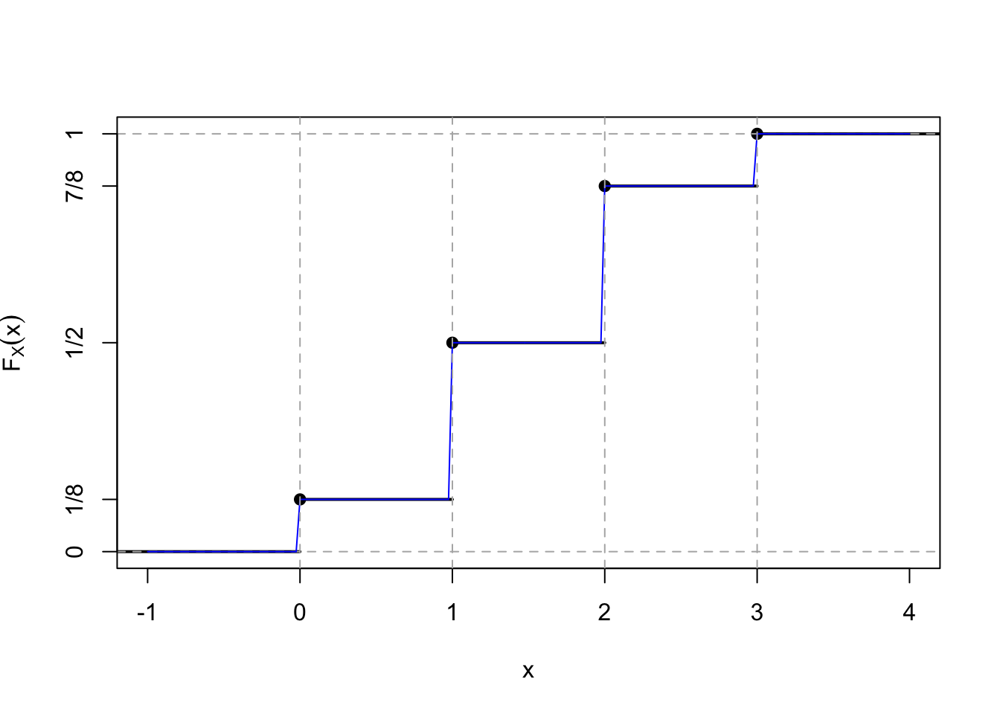

1 Variables Aléatoires Discrètes
Rappel probabilités
Espace Probabilisable
Exemple fondamental: Considérons le jeu du lancé d’un dé.
Expérience aléatoire \(\varepsilon\) : “lancer un dé équilibré”.
Univers: l’ensemble de tous les résultats possibles de cette expérience aléatoire \(\Omega= \{1,2,3,4,5,6\}\)
Evénements: Dans cette expérience aléatoire, on peut s’intéresser à des événements plus complexes qu’un simple résultat élémentaire.
L’ensemble de parties de \(\Omega\), appelé \(\mathcal{P}(\Omega)\), est l’ensemble des sous-ensembles de \(\Omega\).
Une famille \(\mathcal{A}\) de parties (i.e. de sous ensembles) de \(\Omega\). Ces parties sont appelées des événements. On dit que l’événement \(A\) s’est réalisé si et seulement si le résultat \(\omega\) de \(\Omega\) qui s’est produit appartient à \(A\).
-
Tribu: On appelle tribu sur \(\Omega\), toute famille \(\mathcal{A}\) de parties de \(\Omega\) vérifiant:
\(\Omega \in \mathcal{A}\).
si \(A \in \mathcal{A}\), alors \(\bar{A} \in \mathcal{A}\).
si \((A_n)_{n\in\mathbb{N}}\) est une suite d’éléments de \(\mathcal{A}\), alors \(\bigcup\limits_{n\in\mathbb{N}} A_n \in \mathcal{A}\).
\((\Omega,\mathcal{A})\) est un espace probibilisable.
Notions sur les Evénements
-
Soit \((\Omega,\mathcal{A})\) un espace probibilisable:
L’ensemble \(\mathcal{A}\) est appelé tribu des événements. Les éléments de \(\mathcal{A}\) s’appellent les événements.
L’événement \(\Omega\) est appelé événement certain. L’événement \(\emptyset\) est appelé événement impossible.
-
Opérations sur les événements: Soient \(A\) et \(B\) deux événements:
-
\(\bar{A}\) est l’événement contraire de \(A\) (on note aussi \(A^c\)). \(\bar{A}=\Omega\setminus A\).
\(\bar{A}\) se réalise si et seulement si \(A\) ne se réalise pas.
-
\(A\, {\color{blue}\cap} \,B\) est l’événement \(A\) et \(B\).
\(A\, {\color{blue}\cap} \,B\) se réalise lorsque les deux événements se réalisent.
-
\(A\, {\color{blue}\cup} \,B\) est l’événement \(A\) ou \(B\).
\(A\, {\color{blue}\cup} \,B\) se réalise lorsque au moins un des deux événements se réalise.
-
Incompatibilité: \(A\) et \(B\) sont incompatibles si leur réalisation simultanée est impossible: \(A \cap B = \emptyset\).
Implication: \(A\) implique \(B\) signifie que si \(A\) se réalise, alors \(B\) se réalise aussi: \(A \subset B\).
Espace Probabilisé
-
Soit \((\Omega,\mathcal{A})\) un espace probabilisable. On appelle probabilité sur \((\Omega,\mathcal{A})\), toute application \[P : \mathcal{A} \rightarrow \mathbb{R}\] vérifiant:
\(\forall A \in \mathcal{A}, P(A) \geq 0\).
\(P(\Omega)=1\).
\(\forall (A_n)_{n\in\mathbb{N}^*} \in \mathcal{A}^{\mathbb{N}^*}\), une suite d’éléments de \(\mathcal{A}\) deux à deux incompatibles, on a: \[P(\bigcup\limits_{n\in\mathbb{N}^*} A_n) = \sum_{n=1}^{+\infty} P(A_n)\]
Le triplet \((\Omega,\mathcal{A},P)\) est appelé espace probabilisé.
Probabilité: Propriétés
\(P(\emptyset) = 0\).
\(P(A_1 \cup A_2 ) = P(A_1 ) + P(A_2 )-P(A_1 \cap A_2 )\).
Si \(A_1\) et \(A_2\) sont incompatibles, \(A_1 \cap A_2 = \emptyset\), \(P(A_1 \cup A_2 ) = P(A_1 ) + P(A_2 )\).
\(\begin{align} P(A_1 \cup A_2 \cup A_3 ) &= P(A_1 ) + P(A_2 ) + P(A_3 ) - P(A_1 \cap A_2 ) \\ &- P(A_1 \cap A_3 ) - P(A_2 \cap A_3 )+P(A_1 \cap A_2 \cap A_3 )\end{align}\).
\(P(\bar{A}) = 1-P(A)\).
\(P(B\setminus A)=P(B)-P(B\cap A)\).
\(A \subset B \Rightarrow P(A) \leq P(B)\).
Note
Probabilité uniforme sur \(\Omega\) fini
Soit \(\Omega\) un univers fini. On dit que \(P\) est la probabilité uniforme sur l’espace probabilisable \((\Omega,P(\Omega))\) si: \[\forall \omega,\omega' \in \Omega, \quad \quad P(\{\omega\})=P(\{\omega'\})\] On dit aussi qu’il y a équiprobabilité des événements élémentaires.
Soit \((\Omega, \mathcal{P}(\Omega), P)\) un espace probabilisé fini. Si \(P\) est la probabilité uniforme, alors \[\forall A \in \mathcal{A}, \quad \quad P(A)=\frac{Card(A)}{Card(\Omega)}\]
Probabilité conditionnelle
Soit \((\Omega,\mathcal{A},P)\) une espace probabilisé et \(B \in \mathcal{A}\) tel que \(P(B) > 0\). L’application \(P_B\) définie sur \(\mathcal{A}\) par: \[P_B(A) = P(A|B) =\frac{P(A\cap B)}{P(B)}, \quad \quad \forall A \in \mathcal{A}\] est une probabilité sur \((\Omega, \mathcal{A})\); elle est appelée la probabilité conditionnelle sachant \(B\). C’est la probabilité pour que l’événement \(A\) se produise sachant que l’événement \(B\) s’est produit.
Remarque: \((A|B)\) n’est pas un événement! On utilise la notation \(P(A|B)\) par simplicité, mais c’est \(P_B (A)\) qui est correcte.
Formule des probabilités composées: \[P(A\cap B) = P(A|B)P(B) = P(B|A)P(A)\]
-
Formule des probabilités totales:
\(\forall A \in \mathcal{A}, \quad P(A) = P(A \cap B) + P(A \cap \bar{B} )\)
On appelle système complet d’événements (SCE), toute partition dénombrable de \(\Omega\) formée d’éléments de \(A\); c-à-d tout ensemble dénombrable d’événements, deux à deux incompatibles et dont l’union dénombrable est l’événement certain.
Soit \((B_n)_{n\geq 0}\) un SCE de \(\Omega\). On a: \[\forall A \in \mathcal{A},\quad \quad P(A)=\sum_{n\geq 0} P(A \cap B_n)\]
Indépendance: Les événements \(A\) et \(B\) sont indépendants ssi \(P(A\cap B)=P(A)P(B)\).
Formule de Bayes
Première formule de Bayes:
Soit \((\Omega,\mathcal{A},P)\) une espace probabilisé. Pour tous événements \(A\) et \(B\) tels que \(P(A) \neq 0\) et \(P(B) \neq 0\), on a: \[P(B|A) = \frac{P(A|B)P(B)}{P(A)}\]
Deuxième formule de Bayes:
Soit \((\Omega,\mathcal{A},P)\) une espace probabilisé et \((B_n)_{n\geq 0}\) un SCE de \(\Omega\) t.q. pour tout \(n\geq 0 \,\, P(B_n)\neq 0\). On a pour tout \(A \in \mathcal{A}\) t.q. \(P(A)\neq 0\) \[P(B_i|A) = \frac{P(A|B_i) P(B_i)}{\sum_{n\geq 0} P(A|B_n) P(B_n)} \quad \quad \forall i \geq 0\]
Notion de variable aléatoire réelle (v.a.r.)
Après avoir réalisé une expérience aléatoire, il arrive bien souvent qu’on s’intéresse plus à une fonction du résultat qu’au résultat lui-même. Expliquons ceci au moyen des exemples suivants: lorsqu’on joue au dés, certains jeux accordent de l’importance à la somme obtenue sur deux dés, 7 par exemple, plutôt qu’à la question de savoir si c’est la paire (1,6) qui est apparue, ou (2,5), (3,4), (4,3), (5,2) ou plutôt (6,1). Dans le cas du jet d’une pièce, il peut être plus intéressant de connaître le nombre de fois où le côté pile est apparue plutôt que la séquence détaillée des jets pile et face. Ces grandeurs auxquelles on s’intéresse sont en fait des fonctions réelles définies sur l’ensemble fondamental et sont appelées variables aléatoires.
Du fait que la valeur d’une variable aléatoire est déterminée par le résultat de l’expérience, il est possible d’attribuer une probabilité aux différentes valeurs que la variable aléatoire peut prendre.
Soient \(\varepsilon\) une expérience aléatoire et \((\Omega,\mathcal{A},P)\) un espace probabilisé lié à cette expérience. Dans de nombreuses situations, on associe à chaque résultat \(\omega \in \Omega\) un nombre réel noté \(X(\omega)\); on construit ainsi une application \(X : \Omega \rightarrow \mathbb{R}\). Historiquement, \(\varepsilon\) était un jeu et \(X\) représentait le gain du joueur.
Exemple: Un joueur lance un dé équilibré à 6 faces numérotées de 1 à 6, et on observe le numéro obtenu.
Si le joueur obtient 1, 3 ou 5, il gagne 1 euro.
S’il obtient 2 ou 4, il gagne 5 euros.
S’il obtient 6, il perd 10 euros.
Selon l’expérience aléatoire (lancer d’un dé équilibré) l’ensemble fondamental est \(\Omega = \{1,2,3,4,5,6\}\), \(\mathcal{A} = \mathcal{P}(\Omega)\) et \(P\) l’équiprobabilité sur \((\Omega,\mathcal{A})\). Soit \(X\) l’application de \(\Omega\) dans \(\mathbb{R}\) qui à tout \(\omega \in \Omega\) associe le gain correspondant. On a donc
\(X(1) = X(3) = X(5) = 1\)
\(X(2) = X(4) = 5\)
\(X(6) = -10\)
On dit que \(X\) est une variable aléatoire sur \(\Omega\).
On peut s’intéresser à la probabilité de gagner 1 euro, c’est-à-dire d’avoir \(X(\omega) = 1\), ce qui se réalise si et seulement si \(\omega \in \{1,3,5\}\). La probabilité cherchée est donc égale à \(P(\{1,3,5\}) = 1/2\). On écrira aussi \(P(X=1) = 1/2\).
On pourra donc considérer l’événement : \[ \begin{align} \{X=1\} &= \{\omega \in \Omega / X(\omega) = 1\} \\ &= \{\omega \in \Omega / X(\omega) \in \{1\}\} \\ &= X^{-1} (\{1\}) \\ &= \{1,3,5\} \end{align}\]
On aura du même \(P(X=5) = 1/3\) et \(P(X=-10) = 1/6\). Ce que l’on peut présenter dans un tableau
| \(x_i\) | -10 | 1 | 5 |
|---|---|---|---|
| \(p_i=P(X = x_i)\) | \(1/6\) | \(1/2\) | \(1/3\) |
Cela revient à considérer un nouvel ensemble d’événements élémentaires: \[\Omega_X = X(\Omega)= \{-10,1,5\}\] et à munir cet ensemble de la probabilité \(P_X\) définie par le tableau des \(P(X=x_i)\) ci dessus. Cette nouvelle probabilité s’appelle loi de la variable aléatoire X.
Remarquer que \[P(\bigcup_{x_i \in \Omega_X} \{X=x_i\}) = \sum_{x_i \in \Omega_X} P(X=x_i) = 1\]
Dans ce chapitre, nous traitons le cas où \(X(\Omega)\) est dénombrable. La variable aléatoire est alors dite discrète. Sa loi de probabilité, qui peut être toujours définie par sa fonction de répartition, le sera plutôt par les probabilités individuelles. Nous définirons les deux caractéristiques numériques principales d’une variable aléatoire discrète, l’espérance caractéristique de valeur centrale, et la variance, caractéristique de dispersion. Nous définirons aussi les couples de variables aléatoires.
Définition, loi de probabilité
Définition 1.1 On dit qu’une variable aléatoire réelle (v.a.r.) \(X\) est discrète (v.a.r.d.) si l’ensemble des valeurs que prend \(X\) est fini ou infini dénombrable.
Si on suppose \(X(\Omega)\) l’ensemble des valeurs de \(X\) qui admet un plus petit élément \(x_1\). Alors la v.a.r.d. \(X\) est entièrement définie par:
L’ensemble \(X(\Omega)\) des valeurs prises par \(X\), rangées par ordre croissant: \(X(\Omega) = \{x_1, x_2,\ldots,x_i,\ldots\}\) avec \(x_1 \leq x_2 \leq \ldots \leq x_i \leq \ldots\).
La loi de probabilité définie sur \(X(\Omega)\) par \[p_i = P(X=x_i) \,\,\,\,\, \forall \,\, i=1,2,\ldots\]
Remarques:
Soit \(B\) un ensemble de \(\mathbb{R}\), \[P(X \in B) = \sum_{i / x_i \in B} p(x_i)\]
En particulier \[P( a < X \leq b) = \sum_{i / a < x_i \leq b} p(x_i)\]
Bien sûr tous les \(p(x_i)\) sont positives et \(\sum_{i=1}^{\infty} p(x_i) =1\).
Si \(X\) ne prend qu’un petit nombre de valeurs, cette loi est généralement présentée dans un tableau.
Fonction de répartition d’une variable aléatoire discrète
Définition 1.2 On appelle fonction de répartition de la v.a. \(X\), qu’on note \(F(a)\) de la v.a.r.d. \(X\), ou \(F_X(a)\), la fonction définie pour tout réel \(a\), \(-\infty < a < \infty\), par
\[F(a)=P(X \leq a)=\sum_{i / x_{i}\leq a} P(X=x_{i})\]
Cette valeur représente la probabilité de toutes les réalisations inférieures ou égales au réel \(a\).
Propriétés: Voici quelques propriétés de cette fonction:
C’est une fonction en escalier (constante par morceaux).
\(F(a) \leq 1\) car c’est une probabilité.
\(F(a)\) est continue à droite.
\(\lim\limits_{a\to - \infty} F(a) = 0\) et \(\lim\limits_{a\to\infty} F(a) = 1\)
La fonction de répartition caractérise la loi de \(X\), autrement dit: \(F_{X} = F_{Y}\) si et seulement si les variables aléatoires \(X\) et \(Y\) ont la même loi de probabilité.
Fonction de répartition et probabilités sur \(X\)
Tous les calculs de probabilité concernant \(X\) peuvent être traités en termes de fonction de répartition. Par exemple,
\[P(a < X \leq b) = F(b) - F(a) \quad \quad \text{pour tout } a < b\]
On peut mieux s’en rendre compte en écrivant \(\{X \leq b\}\) comme union des deux événements incompatibles \(\{X \leq a\}\) et \(\{ a < X \leq b\}\), soit
\[\{X \leq b\} = \{X \leq a\} \cup \{ a < X \leq b\}\]
et ainsi
\[P(X \leq b) = P(X \leq a) + P(a < X \leq b)\] ce qui établit l’égalité ci dessus.
Astuce
On peut déduire de \(F\) les probabilités individuelles par:
\[ p_{i}=F(x_{i})-F(x_{i-1})\quad \quad \text{pour } 1 \leq i \leq n \]
Exemple: On joue trois fois à pile ou face. Soit \(X\) la variable aléatoire “nombre de pile obtenus”. Ici \(\Omega=\{P, F\}^3\), et donc \[X(\Omega)=\{0, 1, 2, 3\}\]
On a \(card(\Omega)=2^3=8\). Calculons par exemple \(P(X=1)\), c’est à dire la probabilité d’avoir exactement une pile. \[X^{-1}(1)=\{(P, F, F), (F, P, F), (F, F, P) \}\] D’où \(P(X=1)=\displaystyle \frac{3}{8}\).
En procédant de la même façon, on obtient la loi de probabilité de \(X\):
| \(k\) | 0 | 1 | 2 | 3 |
|---|---|---|---|---|
| \(P(X = k)\) | \(\displaystyle \frac{1}{8}\) | \(\displaystyle \frac{3}{8}\) | \(\displaystyle \frac{3}{8}\) | \(\displaystyle \frac{1}{8}\) |
La fonction de répartition de \(X\) est donc donnée par:
\[F(x) = \left\{ \begin{array}{l l} 0 & \quad \text{si $x<0$}\\ 1/8 & \quad \text{si $0 \leq x < 1$}\\ 1/2 & \quad \text{si $1 \leq x < 2$}\\ 7/8 & \quad \text{si $2 \leq x < 3$}\\ 1 & \quad \text{si $x \geq 3$}\\ \end{array} \right.\]
Le graphe de cette dernière est représentée dans la figure suivante:
Exemple: Soit \(A\) un événement quelconque. On appelle variable aléatoire indicatrice de cet événement \(A\), la variable aléatoire définie par: \[X(\omega) = \left\{ \begin{array}{l l} 1 & \quad \text{si $\omega \in A$}\\ 0 & \quad \text{si $\omega \in \bar{A}$}\\ \end{array} \right.\]
et notée \(X=1_A\). Ainsi: \[P(X=1)=P(A)=p\] \[P(X=0)=P(\bar{A})=1-p\]
La fonction de répartition de \(X\) est donc donnée par:
\[ \begin{equation} F(x) = \left\{ \begin{array}{l l} 0 & \quad \text{si $x<0$}\\ 1-p & \quad \text{si $0 \leq x < 1$}\\ 1 & \quad \text{si $x \geq 1$}\\ \end{array} \right. \end{equation} \]
On peut prendre par exemple le cas d’un tirage d’une boule dans une urne contenant 2 boules blanches et 3 boules noires. Soit \(A\):“obtenir une boule blanche” et \(X\) la variable indicatrice de \(A\). La loi de probabilité de \(X\) est alors
| \(k\) | 0 | 1 |
|---|---|---|
| \(P(X = k)\) | \(\frac{3}{5}\) | \(\frac{2}{5}\) |
et sa fonction de répartition est:
\[ \begin{equation} F(x) = \left\{ \begin{array}{l l} 0 & \quad \text{si $x<0$}\\ 3/5 & \quad \text{si $0 \leq x < 1$}\\ 1 & \quad \text{si $x \geq 1$}\\ \end{array} \right. \end{equation} \]
Moments d’une variable aléatoire discrète
Espérance mathématique
Définition 1.3 Pour une variable aléatoire discrète \(X\) de loi de probabilité \(p(.)\), on définit l’espérance de \(X\), notée \(E(X)\), par l’expression
\[E(X)=\sum_{i \in \mathbb{N}} x_{i} p(x_i)\]
En termes concrets, l’espérance de \(X\) est la moyenne pondérée des valeurs que \(X\) peut prendre, les poids étant les probabilités que ces valeurs soient prises.
Reprenons l’exemple où on joue 3 fois à pile ou face. L’espérance de \(X=\)“nombre de pile obtenus” est égal à: \[E(X)=0 \times \frac{1}{8}+1 \times \frac{3}{8}+2 \times \frac{3}{8}+3 \times \frac{1}{8}=1.5\]
Dans le cas de la loi uniforme sur \(X(\Omega)=\{x_{1},\ldots, x_{k}\}\), c’est à dire avec équiprobabilité de toutes les valeurs \(p_{i}=1/k\), on obtient: \[E(X)=\frac{1}{k} \sum_{i=1}^k x_{i}\] et dans ce cas \(E(X)\) se confond avec la moyenne arithmétique simple \(\bar{x}\) des valeurs possibles de \(X\).
Pour le jet d’un dé équilibré par exemple: \[E(X)=\frac{1}{6} \sum_{i=1}^6 i=\frac{7}{2}=3.5\]
Espérance d’une fonction d’une variable aléatoire
Théorème 1.1 (Théorème du transfert) Si X est une variable aléatoire discrète pouvant prendre ses valeurs parmi les valeurs \(x_i\), \(i \geq 1\), avec des probabilités respectives \(p(x_i)\), alors pour toute fonction réelle \(g\) on a
\[E(g(X)) = \sum_i g(x_i)p(x_i)\]
Exemple 1.1 Soit \(X\) une variable aléatoire qui prend une des trois valeurs \(\{-1,0,1\}\) avec les probabilités respectives
\[P(X=-1) = 0.2 \quad \quad P(X=0)=0.5 \quad \quad P(X=1) = 0.3\]
Calculer \(E(X^2)\).
Première approche: Soit \(Y=X^2\). La distribution de \(Y\) est donnée par
\[ \begin{align} P(Y=1) &= P(X=-1) + P(X=1) = 0.5 \\ P(Y=0) &= P(X=0) = 0.5 \end{align}\]
Donc \(E(X^2)=E(Y) = 1(0.5) + 0(0.5) = 0.5\)
Deuxième approche: En utilisant le théorème
\[ \begin{align} E(X^2) &= (-1)^2(0.2) + 0^2(0.5) + 1^2 (0.3) \\ &= 1(0.2+0.3)+0(0.5)=0.5 \end{align}\]
Remarquer que \(0.5=E(X^2) \neq (E(X))^2 = 0.01\)
Linéarité de l’espérance Propriétés de l’espérance
-
\(E(X+a)=E(X)+a, \quad a \in \mathbb{R}\). Un résultat qui se déduit de:
\[ \begin{align} \sum_{i}p_{i}(x_{i}+a) &= \sum_{i}p_{i}x_{i}+\sum_{i}ap_{i} \\ & =\sum_{i}p_{i}x_{i}+a \sum_{i}p_{i}\\ &=\sum_{i}p_{i}x_{i}+a \end{align}\]
\(E(aX)=aE(X), \quad a\in \mathbb{R}\)
il suffit d’écrire: \[\sum_{i}p_{i}a x_{i}=a\sum_{i}p_{i}x_{i}\]\(E(X+Y)=E(X)+E(Y)\), \(X\) et \(Y\) étant deux variables aléatoire.
On peut résumer ces trois propriétés en disant que l’espérance mathématique est linéaire: \[E(\lambda X + \mu Y)= \lambda E(X)+\mu E(Y), \quad \forall \lambda \in \mathbb{R}, \, \forall \mu \in \mathbb{R}\]
Variance
Définition 1.4 La variance est un indicateur mesurant la dispersion des valeurs \(x_{i}\) que peut prendre la v.a. \(X\) et son espérance \(E(X)\). On appelle variance de X, que l’on note \(V(X)\), la quantité
\[V(X)=E\big[ (X-E(X))^2 \big]\] lorsque cette quantité existe.
C’est l’espérance mathématique du carré de la v.a. centrée \(X-E(X)\).
On peut établir une autre formule pour le calcul de \(V(X)\):
\[V(X)=E(X^2)-E^2(X)\]
Or: \[\begin{aligned} V(X)&= E\left[X^2-2XE(X)+E^2(X)\right] \\ &=E(X^2)-E[2XE(X)]+ E[E^2(X)]\\ &=E(X^2)-2E^2(X)+E^2(X) \\ &=E(X^2)-E^2(X) \end{aligned}\]
On cherche \(V(X)\) où \(X\) est le nombre obtenu lors du jet d’un dé équilibré. On a vu dans l’exemple que \(E(X) = \frac{7}{2}\). De plus,
\[\begin{aligned} E(X^2) &= 1^2 \bigg(\frac{1}{6}\bigg) + 2^2 \bigg(\frac{1}{6}\bigg) + 3^2 \bigg(\frac{1}{6}\bigg) + 4^2 \bigg(\frac{1}{6}\bigg) + 5^2 \bigg(\frac{1}{6}\bigg) + 6^2 \bigg(\frac{1}{6}\bigg) \\ &=\bigg(\frac{1}{6}\bigg) (91) = \frac{91}{6}.\end{aligned}\] Et donc
\[V(X) = \frac{91}{6} - \bigg(\frac{7}{2}\bigg)^2 = \frac{35}{12}\]
Propriétés de la variance
\(V(X) \geq 0\)
\(V(X+a)=V(X)\)
en effet: \[\begin{aligned} V(X+a) &= E\big[\left[X+a-E(X+a)\right]^2\big] \\ &=E\big[\left[X+a-E(X)-a\right]^2\big] \\ &=E\big[\left[X-E(X)\right]^2\big] \\ &=V(X). \end{aligned}\]\(V(aX)=a^2V(X)\)
en effet: \[\begin{aligned} V(aX) &= E\big[\left[aX-E(aX)\right]^2\big] \\ &=E\big[\left[aX-aE(X)\right]^2\big] \\ &=E\big[a^2\left[X-E(X)\right]^2\big] \\ &=a^2\big[E\left[X-E(X)\right]^2\big] \\ &= a^2V(X). \end{aligned}\]
Ecart-type
Définition 1.5 La racine carrée de \(V(X)\) est appelée l’écart-type de \(X\), qui se note \(\sigma_{X}\). On a
\[\sigma_{X} = \sqrt{V(X)}\]
\(\sigma_{X}\) s’exprime dans les mêmes unités de mesure que la variable aléatoire \(X\).
A noter:
L’écart type sert à mesurer la dispersion d’un ensemble de données.
Plus il est faible, plus les valeurs sont regroupées autour de la moyenne.
Exemple: La répartition des notes d’une classe. Plus l’écart type est faible, plus la classe est homogène.
L’espérance et l’écart-type sont reliés par l’inégalité de Bienaymé-Tchebychev.
Inégalité de Bienaymé-Tchebychev
Théorème 1.2 Soit \(X\) une variable aléatoire d’espérance \(\mu\) et de variance \(\sigma^2\). Pour tout \(\varepsilon > 0\), on a l’inégalité suivante: \[P\left(|X-E(X)| \geq \varepsilon \right) \leq \frac{\sigma^2}{\varepsilon^2}\]
On peut l’écrire autrement. Soit \(k=\varepsilon/\sigma\). \[P\left(|X-E(X)| \geq k\sigma \right) \leq \frac{1}{k^2}\]
Note
Importance: Cette inégalité relie la probabilité pour \(X\) de s’écarter de sa moyenne \(E(X)\), à sa variance qui est justement un indicateur de dispersion autour de la moyenne de la loi. Elle montre quantitativement que “plus l’écart type est faible, plus la probabilité de s’écarter de la moyenne est faible”.
Théorème 1.3 (Inégalité de Markov) Soit \(X\) une variable aléatoire à valeur non négatives. Pour tout réel \(a > 0\) \[P(X>a) \leq \frac{E(X)}{a}\]
Moments non centrés et centrés
On appelle moment non centré d’ordre \(r \in \mathbb{N^*}\) de \(X\) la quantité, lorsqu’elle existe: \[m_{r}(X)=\sum_{i \in \mathbb{N} } x_{i}^r p(x_{i})=E(X^r)\] Le moment centré d’ordre \(r \in \mathbb{N^*}\) est la quantité, lorsqu’elle existe: \[\mu_{r}(X)=\sum_{i \in \mathbb{N} } p_{i}\left[x_{i}-E(X)\right]^r=E\left[X-E(X)\right]^r\]
Les premiers moments sont: \[m_{1}(X)=E(X), \quad \mu_{1}(X)=0\] \[\mu_{2}(X)=V(X)=m_{2}(X)-m_{1}^2(X)\]
Couple de variables aléatoires discrètes
Considérons deux variables aléatoires discrètes \(X\) et \(Y\). Il nous faut pour modéliser le problème une fonction qui nous donne la probabilité que \((X = x_i )\) en même temps que \((Y = y_j )\). C’est la loi de probabilité conjointe.
Soit \(X\) et \(Y\) deux variables aléatoires réelles discrètes, définies sur un espace probabilisé \((\Omega,\mathcal{A},P)\) et que
\[\begin{aligned} X(\Omega) &= \{x_1,x_2,\ldots,x_{\ell}\} \\ Y(\Omega) &= \{y_1,y_2,\ldots,y_k\} \\ & \quad (\ell \text{ et } k \in \mathbb{N})\end{aligned}\]
La loi du couple \((X,Y)\), dite loi de probabilité conjointe ou simultanée, est entièrement définie par les probabilités:
\[p_{ij} = P(X=x_i;Y=y_j) = P(\{X=x_i\}\cap\{Y=y_j\})\]
On a
\[p_{ij} \geq 0 \quad \text{et} \quad \sum_{i=1}^{\ell} \sum_{j=1}^{k} p_{ij} = 1\]
Le couple \((X,Y)\) s’appelle variable aléatoire à deux dimensions et peut prendre \(\ell \times k\) valeurs.
Table de probabilité conjointe
Les probabilités \(p_{ij}\) peuvent être présentées dans un tableau à deux dimensions qu’on appelle table de probabilité conjointe:
| \(X\)\\(Y\) | \(y_1\) | \(y_2\) | \(\ldots\) | \(y_j\) | \(\ldots\) | \(y_k\) |
|---|---|---|---|---|---|---|
| \(x_1\) | \(p_{11}\) | \(p_{12}\) | \(p_{1j}\) | \(p_{1k}\) | ||
| \(\vdots\) | ||||||
| \(x_i\) | \(p_{i1}\) | \(p_{i2}\) | \(p_{ij}\) | \(p_{ik}\) | ||
| \(\vdots\) | ||||||
| \(x_{\ell}\) | \(p_{\ell 1}\) | \(p_{\ell 2}\) | \(p_{\ell j}\) | \(p_{\ell k}\) |
A la première ligne figure l’ensemble des valeurs de \(Y\) et à la première colonne figure l’ensemble des valeurs de \(X\). La probabilité \(p_{ij} = P(X=x_i;Y=y_j)\) est à l’intersection de la \(i^{e}\) et de la \(j^{e}\) colonne.
Lois marginales
Lorsqu’on connaît la loi conjointe des variables aléatoires \(X\) et \(Y\), on peut aussi s’intéresser à la loi de probabilité de \(X\) seule et de \(Y\) seule. Ce sont les lois de probabilité marginales.
Loi marginale de \(X\): \[p_{i.} = P(X=x_i) = P[\{X=x_i\}\cap \Omega] = \sum_{j=1}^k p_{ij} \quad \quad \forall \, i=1,2,\ldots,\ell\]
Loi marginale de \(Y\): \[p_{.j} = P(Y=y_j) = P[ \Omega \cap \{Y=y_j\}] = \sum_{i=1}^{\ell} p_{ij} \quad \quad \forall \, j=1,2,\ldots,k\]
On peut calculer les lois marginales directement depuis la table de la loi conjointe. La loi marginale de \(X\) est calculée en faisant les totaux par ligne, tandis que celle de \(Y\) l’est en faisant les totaux par colonne.
C’est le fait que les lois de \(X\) et \(Y\) individuellement puissent être lues dans les marges du tableau qui leur vaut leur nom de lois marginales.
| \(X\)\\(Y\) | \(y_1\) | \(y_2\) | \(\ldots\) | \(y_j\) | \(\ldots\) | \(y_k\) | Marginale de \(X\) |
|---|---|---|---|---|---|---|---|
| \(x_1\) | \(p_{11}\) | \(p_{12}\) | \(p_{1j}\) | \(p_{1k}\) | \(p_{1.}\) | ||
| \(\vdots\) | |||||||
| \(x_i\) | \(p_{i1}\) | \(p_{i2}\) | \(p_{ij}\) | \(p_{ik}\) | \(p_{i.}\) | ||
| \(\vdots\) | |||||||
| \(x_{\ell}\) | \(p_{\ell 1}\) | \(p_{\ell 2}\) | \(p_{\ell j}\) | \(p_{\ell k}\) | \(p_{\ell .}\) | ||
| Marginale de \(Y\) | \(p_{.1}\) | \(p_{.2}\) | \(p_{. j}\) | \(p_{.k}\) | 1 |
Exercice
On tire au hasard 3 boules d’une urne contenant 3 boules rouges, 4 blanches et 5 noires. \(X\) et \(Y\) désignent respectivement le nombre de boules rouges et celui de boules blanches tirées. Déterminer la loi de probabilité conjointe du couple \((X,Y)\) ainsi que les lois marginales de \(X\) et de \(Y\).
Lois conditionnelles
Pour chaque valeur \(y_j\) de \(Y\) telle que \(p_{.j} = P(Y=y_j) \neq 0\) on peut définir la loi conditionnelle de \(X\) sachant \(Y=y_j\) par
\[p_{i/j} = P(X=x_i / Y=y_j) = \frac{P(X=x_i;Y=y_j)}{P(Y=y_j)} = \frac{p_{ij}}{p_{.j}} \quad \quad \forall i = 1,2,\ldots,\ell\]
De même on définit la loi de \(Y\) sachant \(X=x_i\) par
\[p_{j/i} = P(Y=y_j / X=x_i) = \frac{P(X=x_i;Y=y_j)}{P(X=x_i)} = \frac{p_{ij}}{p_{i.}} \quad \quad \forall j = 1,2,\ldots,k\]
Indépendance de variables aléatoires
Théorème 1.4 On dit que deux v.a.r.d sont indépendantes si et seulement si
\[P(X=x_i;Y=y_j) = P(X=x_i) P(Y=y_j)\] \[\forall \, i = 1,2,\ldots,\ell \text{ et } j = 1,2,\ldots,k\]
On montre que
\[P(\{X\in A\} \cap \{Y \in B\}) = P(\{X\in A\}) P(\{Y \in B\}) \quad \quad \forall \,\, A \text{ et } B \in \mathcal{A}\]
Propriétés
Soit deux v.a.r.d. \(X\) et \(Y\),
\(E(X+Y)=E(X)+E(Y)\)
Si \(X\) et \(Y\) sont indépendantes alors \(E(XY)=E(X)E(Y)\). Mais la réciproque n’est pas toujours vraie.
Covariance
Soit \(X\) et \(Y\) deux v.a.r.d. On appelle covariance de \(X\) et de \(Y\) la valeur si elle existe de
\[ \begin{align} Cov(X,Y) &= E[(X-E(X))(Y-E(Y))] \\ &= \sum_i \sum_j (x_i-E(X))(y_j-E(Y)) p_{ij} \end{align}\]
qu’on peut calculer en utilisant la formule suivante
\[Cov(X,Y) = E(XY) - E(X)E(Y)\]
Propriétés
\(Cov(X,Y)=Cov(Y,X)\)
\(Cov(aX_1+bX_2,Y) = a Cov(X_1,Y) + b Cov(X_2,Y)\)
\(V(X+Y)= V(X) + V(Y) + 2 Cov(X,Y)\)
-
Si \(X\) et \(Y\) sont indépendantes alors
\(Cov(X,Y) = 0\) (la réciproque n’est pas vraie)
\(V(X+Y) = V(X) + V(Y)\) (la réciproque n’est pas vraie)
Coefficient de corrélation linéaire
On appelle coefficient de corrélation linéaire de \(X\) et de \(Y\) la valeur définie par
\[\rho = \rho(X,Y) = \frac{Cov(X,Y)}{\sqrt{V(X)V(Y)}} = \frac{Cov(X,Y)}{\sigma_X \sigma_Y}\]
On peut montrer que \[-1 \leq \rho(X,Y) \leq 1\]
Pour le montrer on peut partir du fait que la variance est toujours positive ou nulle. Donc \(V(\frac{X}{\sigma_X} + \frac{Y}{\sigma_Y}) \geq 0\) et \(V(\frac{X}{\sigma_X} - \frac{Y}{\sigma_Y}) \geq 0\).
Interprétation de \(\rho\)
Le coefficient de corrélation est une mesure du degré de linéarité entre \(X\) et \(Y\).
Les valeurs de \(\rho\) proches de \(1\) ou \(-1\) indiquent une linéarité quasiment rigoureuse entre \(X\) et \(Y\).
Les valeurs de \(\rho\) proche de 0 indiquent une absence de toute relation linéaire.
Lorsque \(\rho(X,Y)\) est positif, \(Y\) a tendance à augmenter si \(X\) en fait autant.
Lorsque \(\rho(X,Y) < 0\), \(Y\) a tendance à diminuer si \(X\) augmente.
Si \(\rho(X,Y) =0\), on dit que ces deux statistiques sont non corrélées.